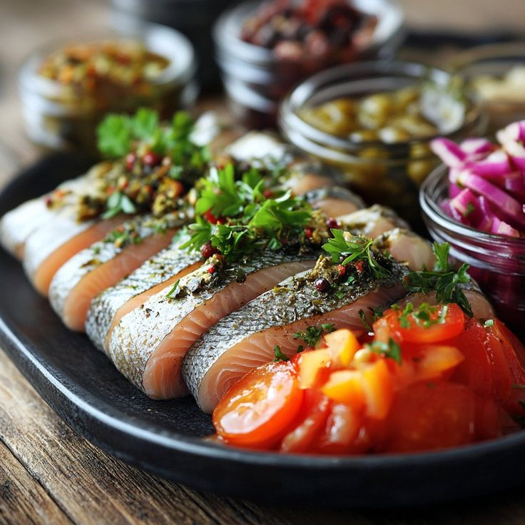

Súrsild

Pickled Herring
Preserving food was essential for surviving the harsh nordic winters. Pickled herring is a classic example of nordic ingenuity in food preservation.
This tangy fish is perfect as a snack or part of a larger meal.
Ingredients
- 1 lb fresh herring, cleaned and filleted
- 1 cup white vinegar
- 1 cup water
- 1 tbsp each of sugar and salt
- 1 tsp black peppercorns
- 1 onion, thinly sliced
Steps
- In a saucepan, combine vinegar, water, sugar, salt, and peppercorns. Bring to a boil.
- Place the herring fillets in a jar and layer with the sliced onion.
- Pour the hot vinegar mixture over the herring until fully covered.
- Seal the jar and refrigerate for at least 48 hours before eating.
Home